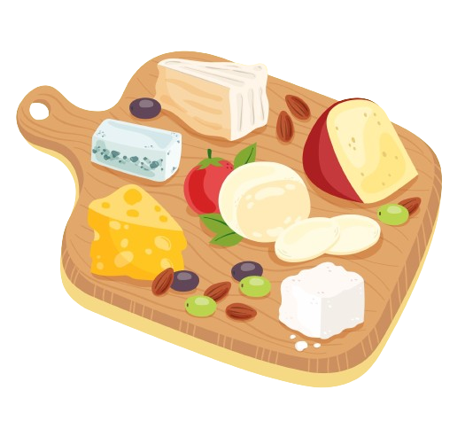

Seja Bem Vindo à Qui Queijo Bom Sô!
Sua Loja de Queijos perfeita para qualquer ocasião!
Seja muito bem-vindo ao universo encantador e irresistível dos queijos finos! Aqui, nossa paixão por sabores autênticos e qualidade excepcional se traduz em uma experiência gastronômica única que vai além das expectativas!

Experiência de Compra Incomparável
Acreditamos que o atendimento ao cliente é tão importante quanto a qualidade dos nossos produtos.
Por isso, nossa equipe está sempre disponível para responder às suas perguntas, oferecer sugestões
personalizadas e garantir que sua experiência de compra seja tão gratificante quanto degustar um
delicioso queijo.
Além disso, na Qui Queijo Bom Sô, não se trata apenas de comprar queijos, mas de participar de uma
comunidade de amantes da boa comida. Estamos aqui para guiá-lo em uma jornada de descobertas,
fornecendo informações detalhadas sobre cada queijo, suas origens e as melhores combinações para
apreciá-los ao máximo.
O que mais valorizamos por aqui?
- Ampla variedade de Queijos
- Atenção e Compromisso
- Suporte Total ao Cliente
- Compra Fácil e Rápida
- Envio Seguro
Venha conferir os nossos melhores Produtos

Bem-vindo ao universo exquisito da Qui Queijo Bom Sô, onde nossa seleção de queijos transcende
expectativas e
desafia o paladar. De clássicos irresistíveis, como o cremoso Brie e o robusto Cheddar, até verdadeiros
tesouros artesanais, cada queijo conta uma história única de tradição e dedicação. Apresentamos uma
oferta diversificada que vai desde experiências delicadas até opções ousadas e raras, proporcionando uma
jornada culinária que agrada a todos os paladares.
Comprometidos com a excelência, garantimos que cada queijo em nossa coleção seja escolhido com cuidado,
proveniente de renomados produtores e regiões específicas. Seja explorando opções clássicas ou
aventurando-se em novos sabores, aqui cada pedaço é uma promessa de qualidade superior e uma
celebração da riqueza de aromas e texturas que só os melhores queijos podem oferecer.
Entregue-se à experiência sensorial única de nossos queijos e descubra o prazer autêntico de explorar o
vasto e delicioso mundo que eles proporcionam.

Ficou alguma dúvida?
Quais métodos de Pagamento são aceitos?
Para garantir sua conveniência, aceitamos uma variedade de métodos de pagamento, incluindo Cartões de Crédito, Débito e opções de Pagamento Online seguras. Queremos facilitar o processo de compra para que você possa desfrutar dos nossos deliciosos queijos sem preocupações. Caso tenha alguma preferência ou dúvida específica sobre os métodos de pagamento, nossa equipe de atendimento ao cliente está pronta para ajudar a encontrar a melhor solução para você.
Como posso ter certeza da qualidade dos queijos durante o transporte?
Entendemos a importância da qualidade, e garantimos que nossos queijos sejam Embalados com Cuidado e enviados através de Serviços Logísticos Confiáveis. Utilizamos métodos especiais para preservar a frescura e a integridade dos produtos durante o transporte, assegurando que sua experiência seja tão excepcional quanto os próprios queijos.
Existe alguma orientação sobre como armazenar os queijos?
Sim, fornecemos informações detalhadas sobre o armazenamento adequado de cada tipo de queijo. Estas orientações garantem que você desfrute do sabor máximo de cada peça. Além disso, nossa equipe de atendimento ao cliente está à disposição para esclarecer qualquer dúvida sobre o armazenamento ou consumo dos queijos.
Como funciona caso haja algum problema com os produtos?
Nossa prioridade é sua satisfação, e caso haja algum problema com os produtos, entre em contato imediatamente com nossa equipe de suporte. Estamos comprometidos em resolver qualquer questão de maneira rápida e eficaz, seja por meio de Substituição ou Reembolso.